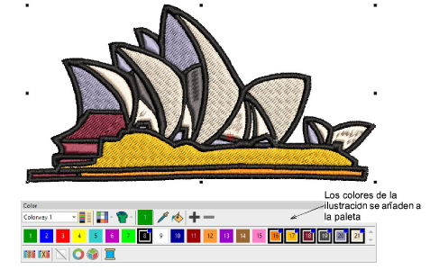

Desarrollo .NET
Aplicaciones de escritorio y sistemas de gestión con bases de datos.
Integración de desarrollo de software y sistemas de gestión para la industria textil en Ecuador.
Conocer más
Diseño adaptable a cualquier dispositivo
Aplicaciones de escritorio y sistemas de gestión con bases de datos.
Administración de redes, servidores y topologías empresariales.
Optimización de diseños de bordado y cálculos de márgenes de producción.
Escríbenos para solicitar una proforma técnica